# Illness Models
rmarkdown::paged_table(readRDS("../../results/tables/illness_rmse_models.rds"))# Hospitalization Models
rmarkdown::paged_table(readRDS("../../results/tables/hospital_rmse_models.rds"))In the United States, it has been reported that one in six Americans acquire foodborne illnesses annually, leading to around 128,000 hospitalizations and 3,000 deaths. Our project aims to identify the major etiology agents responsible for foodborne illnesses and their associated factors in the U.S. We utilized two datasets collected by the CDC, which contain foodborne outbreak information from 1998-2015 and 2009-2020, respectively. The first dataset was used for model training, while the second dataset was reserved for testing purposes. We developed regression models, including linear and Poisson regression, to predict health outcomes using selected predictors from the training dataset. Additionally, random forest model and bagging approaches were employed to refine the model. Results showed that multi-state outbreaks were the most commonly associated with total hospitalizations. Poultry was identified as the most frequent food vehicles linked to mass hospitalizations due to foodborne illnesses while salad was identified as the primary culprit for causing the most foodborne illnesses from 1998 to 2015. Bacteria is the predominant etiologic agent that causes hospitalization, among which the genus Salmonella is the most frequently identified etiologic agent responsible for foodborne illness-related hospitalizations. Most commonly implicated food vehicles for Salmonella include fruits, pork, and poultry. The best model constructed based on time, pathogen type, pathogen etiology, state, and food type was random forest model, with the lowest RMSE of 55.745, 5.047 for illnesses and hospitalizations, respectively.
Foodborne pathogens typically cause serious gastrointestinal infections. On average, 1 in 6 Americans acquire foodborne illness each year, leading to 128,000 hospitalizations, and 3,000 mortality (Food Safety & Applied Nutrition, 2022). Economic loss associated with foodborne illness is estimated to be greater than 50 billion US dollars annually. Moreover, it can be particularly challenging to trace the food sources and exposure settings that are associated with these illnesses . Nevertheless, foodborne disease outbreak surveillance enables the identification of crucial agents that are commonly involved in outbreaks. In the United States, CDC conducts surveillance for foodborne disease outbreaks through the Foodborne Disease Outbreak Surveillance System (Gould et al., 2013). The primary responsibility for the identification, investigation, and reporting of foodborne disease outbreaks caused by various enteric microorganism, and chemical/toxic agents lies with state, local, and territorial public health departments, in accordance with established scientific protocols and procedures (Hoffman et al., 2005). Previous studies have identified that restaurants are sites frequently attributed to mass-outbreaks, and typical foods associated with these outbreaks include improperly-prepared meats and vegetables (Mun, 2020; Sarno, Pezzutto, Rossi, Liebana, & Rizzi, 2021). The etiologies leading to disease encompass a wide range of microorganisms, ranging from bacteria such as Salmonella spp. and E. coli, to viruses (norovirus and rotavirus), to parasites (Cryptosporidium spp. and Cyclospora spp), as well as toxins like marine toxins or metal toxins (CDC, 2022). To verify pathogens of greatest concern, common settings associated with foodborne illness, and foods typically associated with such outbreaks, this study was launched as a research project at the University of Georgia using information gathered over a 17-year period from the Centers for Disease Control and Prevention (CDC).
This research project is designed to answer the following questions, 1). the most frequent locations that foodborne outbreaks occur, 2). the most associated etiology agents, and 3). the food vehicle linked to foodborne outbreaks. In other words, immediate outcomes of interest are location, disease etiology, and food category. Furthermore, these were employed as predictors for building a model aimed at forecasting the the health outcomes of interest: illnesses and hospitalizations. Our research postulates three hypotheses based on empirical evidence, 1). foodborne disease outbreaks exhibit higher incidence rates in home settings compared to restaurant settings, 2). E. coli represents the most frequently detected pathogenic agent in cases of foodborne disease outbreaks, and 3). salad is the food item most commonly associated with foodborne disease outbreaks.
Two datasets were adopted for this research. The first dataset, which was used to build statistical models for the study, was uploaded onto Kaggle in 2017 and originated in CDC’s National Outbreak Reporting System (NORS) website, with 12 variables and more than 16,950 observations (CDC, 2017). The second dataset, which was used for evaluating the model performance, was retrieved from the CDC’s NORS website. The second data set covers reports of foodborne and waterborne disease outbreaks, as well as enteric disease outbreaks spread by contact with environmental sources, infected animals or persons, and other means from 2009 to 2020.
The datasets were downloaded from their respective sites and imported into R/RStudio using the tidyverse and readxl packages. Afterwards, the data structure for each file was analyzed, including how many “NA” values were present for each column in the dataset. Only observations pertaining to foodborne disease were kept. Variables containing less than 80% “NA” values, including predictors and outcomes of interest, were retained. For the designated “training data”, cases that did not have laboratory-confirmed tests were filtered out. Variables for pathogen type (virus, bacteria, parasite, and poison) and Simplified Etiology were created based on pathogen species. For both datasets, Location was formatted identically to maintain compatibility for eventual machine learning. IFSAC Category was also created in the training data based on the formatting of the “test data” and modified to include salads, desserts, and poultry. To address coinfections, observations containing multiple pathogen etiologies were separated into different rows. Finally, both datasets were modified to contain identical columns prior to being saved as “processed data” in the appropriate subdirectory.
For more information, please see the “processingfile_v1.qmd” file located in the “processing_code” folder of the “code” subdirectory.
After processing procedures, an exploratory data analysis was performed to view general relationships between predictors (time, pathogen type, pathogen etiology, state, and food type) and the health outcomes of interest (illnesses and hospitalizations). We observed certain patterns between predictors and outcomes and selected predictors accordingly for further model construction.
Linear and Poisson regression models were afterwards constructed using the aforementioned predictors and outcomes from the training data. Specifically, We first assessed the univariate relationships between the main outcome Simple Etiology and each health outcome Illnesses and Hospitalizations using linear regression. Multiple linear and Poisson regression models were also performed with each health outcome. Machine learning approaches including random forest and bagging models were also trained to predict health outcomes using the Kaggle dataset for the NORS-CDC data. For machine learning models, we tuned hyperparameters using randomized grid search. The model with the lowest RMSE among all the models was chosen as the best model from the training data, and subsequently utilized for the test data.
For more information, please refer to the “statistical_analysis.qmd” file inside the “analysis_code” folder of the “code” subdirectory.
After applying the aforementioned data processing method to the raw data, a total of 3985 observations were obtained in the training data set. The illnesses caused by a single outbreak ranged from 2 to 1644 while resulted hospitalizations varied from 0 to 143 from 1998 to 2015. In the United States, Multi-state outbreaks were the most commonly associated with total hospitalizations (N= 3506) caused by foodborne illnesses, followed by California (N=533), Ohio (N=387), and New York (n=354). Poultry, fruits, beef, and pork were identified as the most frequent food vehicles linked to mass hospitalizations (involving over 500 individuals) due to foodborne illnesses (Figure 2). Nevertheless, despite poultry being the top food vehicle, salad was identified as the primary culprit for causing the most foodborne illnesses from 1998 to 2015, as shown in Table 2.
Figure 1 unveiled patterns concerning the seasonality of foodborne illness outbreaks. Hospitalizations due to foodborne illnesses peaked in July, while reaching their lowest point between December and February. Intriguingly, bacteria is the predominant etiologic agent that causes hospitalization (Figure 3). Among these bacteria, the genus Salmonella is the most frequently identified etiologic agent responsible for foodborne illness-related hospitalizations.Most commonly implicated food vehicles for Salmonella include fruits, pork, and poultry (Figure 5). In contrast, E. coli and Clostridium, two other bacterial species associated with foodborne hospitalizations, were most frequently linked to vegetables as the primary food carrier. Restaurant and private home were locations where the majority of foodborne hospitalizations occurred (Figure 6). The testing data set revealed a number of trends that were consistent with those found in the training data set. For instance, Salmonella continued to be the most common bacterial pathogen responsible for foodborne illnesses, and restaurants remained the most frequently implicated exposure setting (Figure 7 and Figure 8). However, some shifts were also observed between the two data sets. While Table 2 had previously shown salad to be the leading food carrier of foodborne illnesses, the testing data set revealed that poultry was actually the most common source of illness between 2009 and 2020 (Figure 9). In addition, the testing data set revealed that E. coli had replaced the previously identified second most common bacterial pathogen Clostridium, causing a significant number of illnesses between 2009 and 2020 (Figure 8).
Based on the findings of the exploratory analysis, there are clear associations between time (Month, Year), pathogen type, etiology, location, state, and food type (IFSAC Category) with health outcomes. However, since there is a strong correlation between etiology and pathogen types, the latter was removed. Consequently, our predictive models were constructed using the chosen predictors of time (Month, Year), etiology, location, state, and food type (IFSAC Category).
Between univariate and multivariate regressions, multivariate models performed better with lower associated RMSEs. For both health outcomes, the multivariate linear regression models (RMSE = 58.415, 5.498) constructed performed better with and than multivariate poisson regression models (RMSE = 59.727, 5.641).
# Illness Models
rmarkdown::paged_table(readRDS("../../results/tables/illness_rmse_models.rds"))# Hospitalization Models
rmarkdown::paged_table(readRDS("../../results/tables/hospital_rmse_models.rds"))Overall, between itself and the other models (linear regression, poisson regression, and bagging) generated, the random forest model performed the best for both health outcomes with the lowest RMSEs (55.745, 5.047).
Fitting the finalized random forest model to the test data resulted in RMSEs of 36.635 and 6.735 for the health outcomes of illnesses and hospitalizations, respectively.
Exploratory data visualization demonstrates bacteria contribute to the majority outbreaks, and all outbreaks with illnesses numbering over 1,000 and hospitalizations over 100 are attributed to bacteria. From all pathogen types, bacteria are thus associated with worse health outcomes when it comes to food poisoning.
From 1998 to 2015, multistate outbreaks caused the most illnesses (N = 1.724^{4}) and hospitalizations (N = 3506) than any in-state outbreak. The fact that multistate outbreaks were seen more often than in any individual state for illnesses and hospitalizations suggests that these disease outbreaks typically involve a regional or national ingredient distributor. Hence, it would be reasonable to suggest laboratory sampling of goods, especially for bacteria, as a safety benchmark upon arrival at their destinations.
In terms of food categories, poultry was identified to have caused the most hospitalizations (N = 777), followed closely by fruits (N = 750) and beef (N = 734). Interestingly, however, salads were found to cause the most illnesses (N = 1.149^{4}). Upon addition of total hospitalizations and illnesses for both poultry and salads, salads were determined to have the highest number of cases in total, which confirms our original hypothesis.
In addition to the above information, it’s worth noting that the data also revealed some interesting trends related to the seasonality and demographics of foodborne illness outbreaks. For instance, the incidence of outbreaks tends to be highest during the summer months, likely due to factors such as increased outdoor food preparation and consumption of raw or undercooked foods.
In exploratory analysis, slight shift regarding the most common food vehicle that led to most foodborne illnesses (Table 2 and Figure 9) was obtained. This highlighted the dynamic nature of foodborne illness outbreaks, and the need for ongoing monitoring and surveillance to identify emerging trends and adapt food safety practices accordingly. Efforts to improve food safety must be responsive to these changing patterns to prevent and control the spread of pathogens.
The remaining two of the three initial hypotheses were proved incorrect. Instead of E. coli, results overall indicated that Salmonella spp. were the most common pathogens linked to foodborne disease; these bacteria contribute to the greatest amount of illnesses and hospitalizations in comparison to other disease agents for our data. As a matter of fact, contaminated poultry, eggs, beef, and pork are the most common food vehicles that contribute to Salmonella outbreaks (Jackson, Griffin, Cole, Walsh, & Chai, 2013). The result obtained from a previous study conducted in Poland from 2010 to 2015 studying the distribution of Salmonella serovars identified from food, animals, and feedingstuffs is consistent with our findings (Skarżyńska et al., 2017). The study revealed that Salmonella most frequently recovered from poultry samples, and S. Typhimurium being the most prevalent in pork products.
Finally, we observed that food poisoning is most frequently linked to restaurants instead of private households. This result is in agreement with a previous study that revealed over 40% of outbreaks could be traced back to restaurants (Hedberg et al., 2006). In contrast, some Chinese researchers reported that the most common exposure setting was household, followed by restaurants (Li et al., 2020).
Lastly, the random forest model outperformed all other models in minimizing RMSE. Our findings reveal that the ‘Multistate’ variable holds the highest importance in determining hospitalization predictions, followed by ‘Year’, ‘Month’, and ‘IFSAC Category_Fruits’. ‘Location’ also plays a significant role in the model’s predictive power (Figure 10). These results suggest that geographical factors, such as multistate outbreaks, and temporal factors, such as year and month, play a crucial role in predicting hospitalizations. Furthermore, the specific IFSAC category, particularly ‘Fruits’, and the presence of Salmonella contribute significantly to the model’s performance, indicating that certain food categories and bacterial etiologies may have a higher association with hospitalization rates.
It is also interesting to note that bagging resulted in a higher RMSE than random forest each time despite using all predictors in its splitting, which should have greatly reduced variance. However, random forest models take a random subset of the 10 predictors for splitting; average variance is thus reduced from high to moderate–meaning that random forest should have performed worse. Additional future investigation is suggested to uncover why.
Overall, these results offer insight into common disease characteristics across food poisoning cases, which is greatly useful for epidemiologists and other public health professionals to anticipate which areas to investigate first for future outbreaks.
Future research can focus on the associations between subspecies of identified common bacterial etiology and crucial factors. Text mining approach might be implemented to explore more food carriers linked to foodborne outbreaks.
Food poisoning in the United States poses a great concern to public health in terms of both morbidity and economic costs. Previous surveillance data points to Salmonella bacteria and salads as the main cause and medium for foodborne disease outbreaks, along with the most common setting for such outbreaks being a restaurant. This study allowed for a comprehensive understanding of the potential variables that may impact the occurrence and severity of foodborne disease outbreaks. Identifying key patterns and associations enabled the development of more targeted and effective intervention strategies to mitigate the risks of foodborne illness,and enhance public health outcomes. These findings will also give future outbreak investigators a first direction to consider in the field.

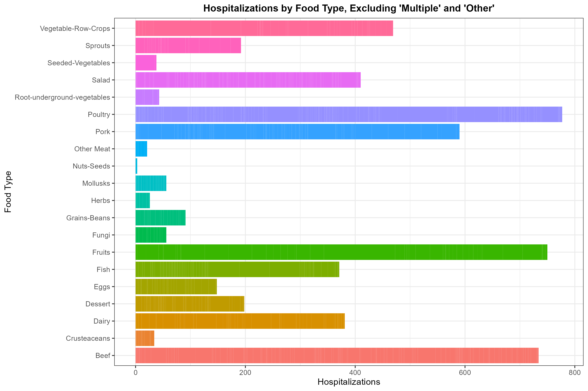
 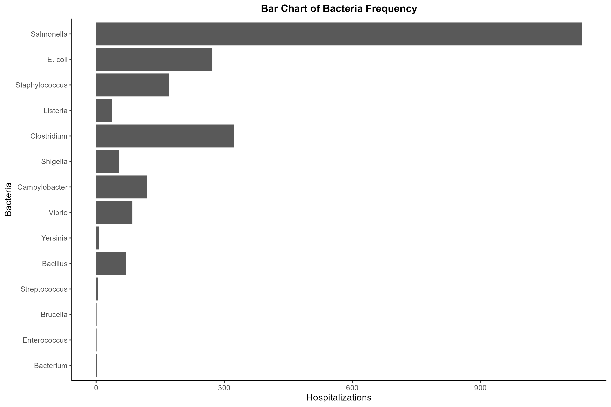
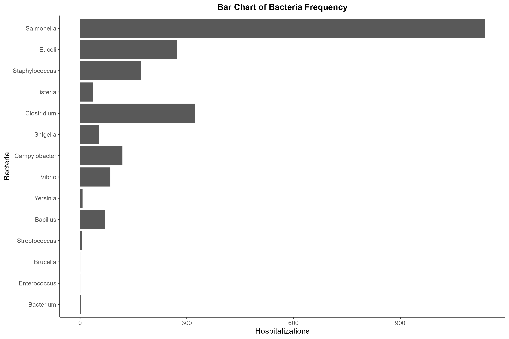  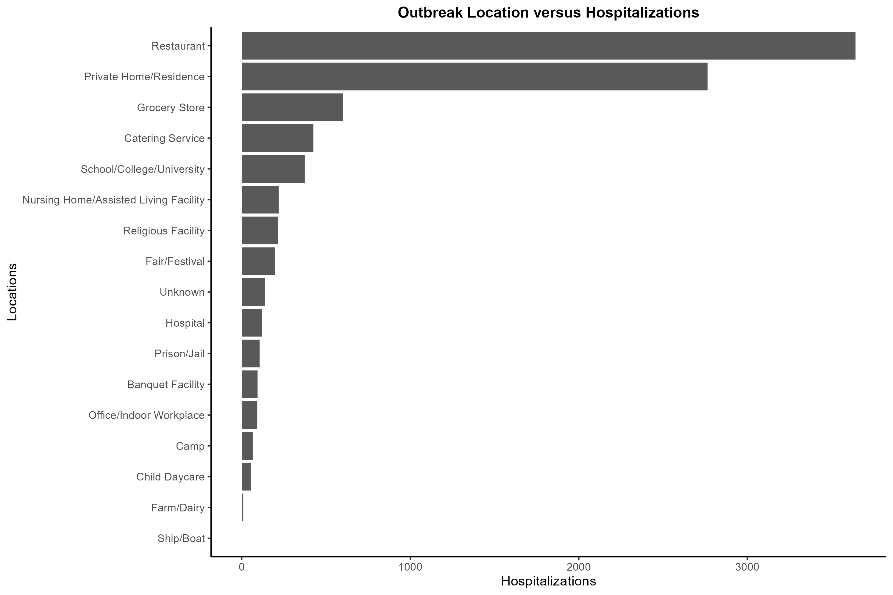 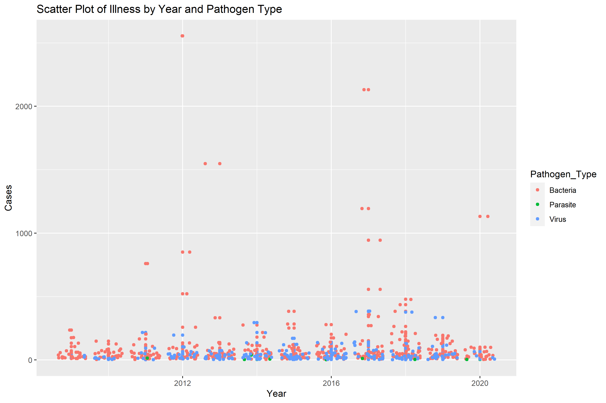 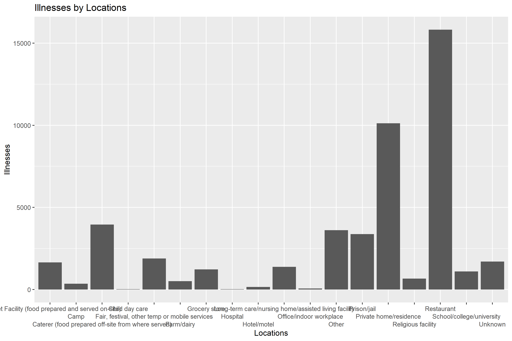 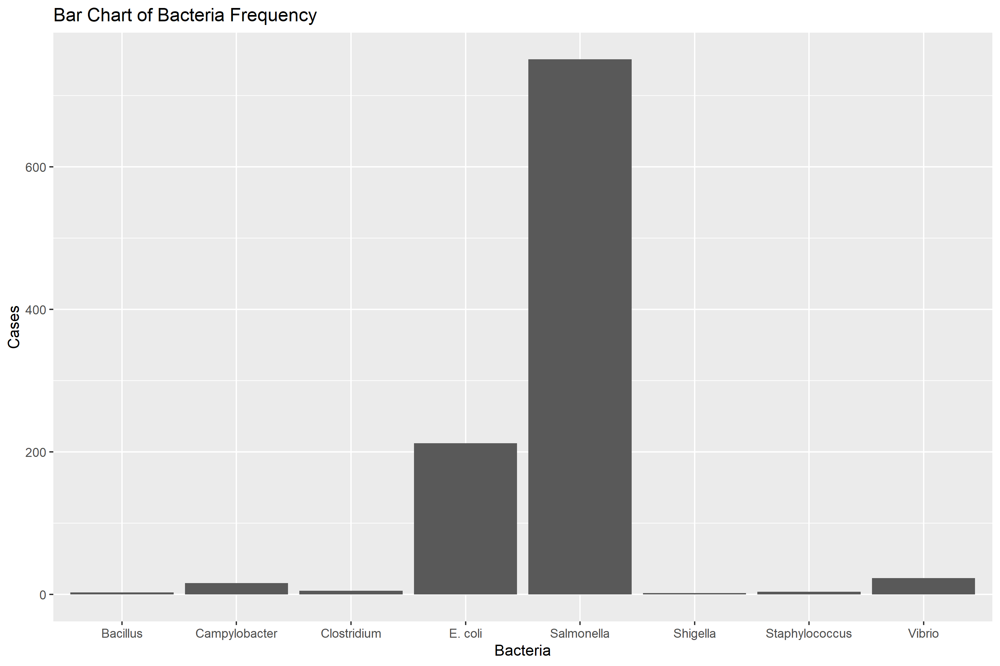 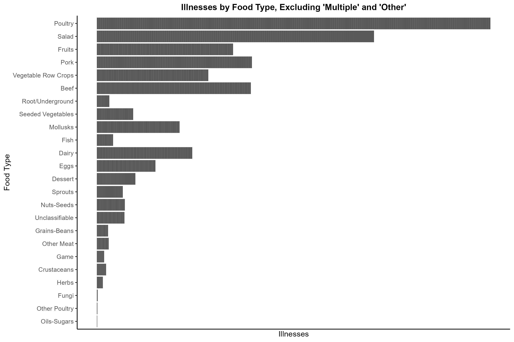
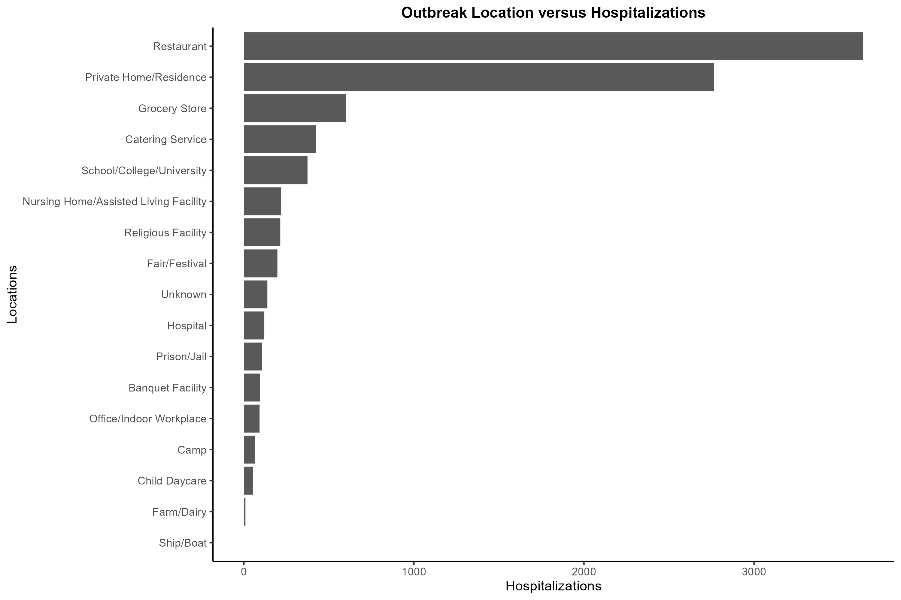 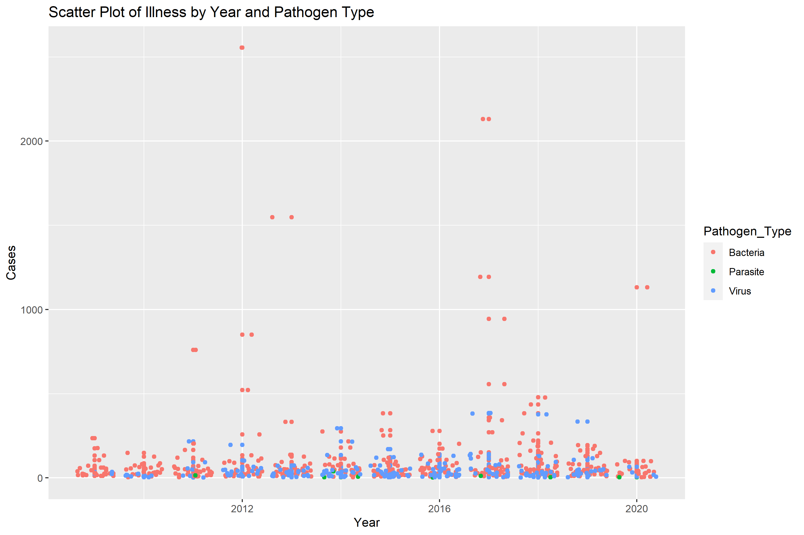 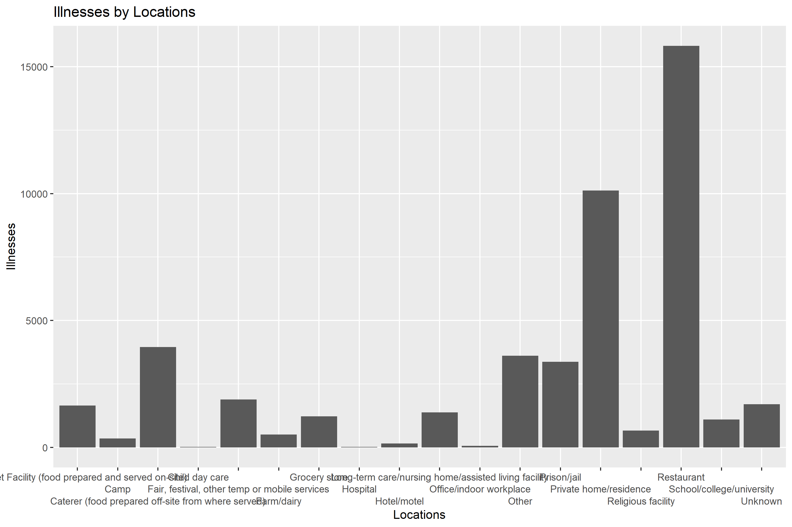 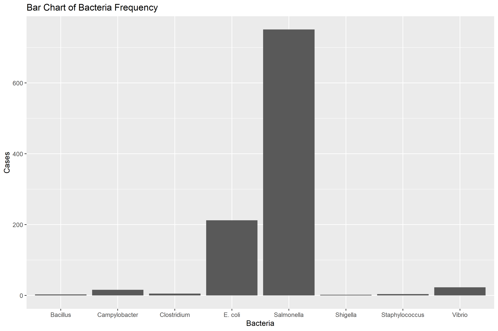 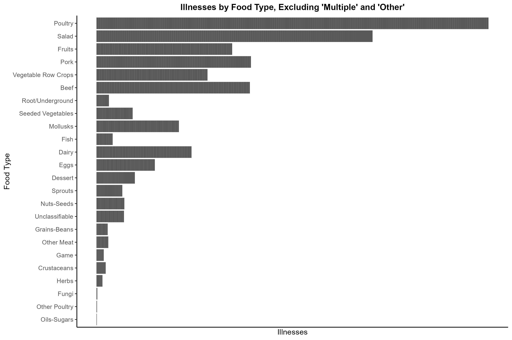 
first_table <- readRDS("../../results/tables/state_v_hospitalization_training.rds") %>%
rename(Hospitalizations = all_hospitalizations)
first_table <- flextable(first_table)
first_table <- theme_vanilla(first_table)
first_table <- set_caption(first_table, caption = as_paragraph(colorize("Table 1. Hospitalizations by state from 1998 to 2015.", color = "black")))
first_table <- set_table_properties(first_table, layout = "autofit")
first_tableState | Hospitalizations |
|---|---|
Multistate | 3,506 |
California | 533 |
Ohio | 387 |
New York | 354 |
Florida | 321 |
Illinois | 303 |
Pennsylvania | 269 |
Minnesota | 264 |
Georgia | 263 |
Wisconsin | 201 |
Michigan | 185 |
Tennessee | 156 |
Virginia | 142 |
Maryland | 141 |
Washington | 136 |
Oregon | 128 |
North Carolina | 121 |
Texas | 117 |
Colorado | 113 |
Arizona | 111 |
South Carolina | 111 |
Alabama | 98 |
Missouri | 89 |
Louisiana | 86 |
Connecticut | 83 |
Massachusetts | 83 |
Iowa | 82 |
Arkansas | 81 |
Indiana | 73 |
Hawaii | 69 |
Nevada | 61 |
Alaska | 58 |
Kansas | 52 |
New Jersey | 51 |
Mississippi | 31 |
Utah | 28 |
New Mexico | 27 |
Nebraska | 26 |
Wyoming | 25 |
Maine | 24 |
Kentucky | 22 |
Idaho | 21 |
New Hampshire | 14 |
South Dakota | 14 |
Rhode Island | 11 |
North Dakota | 8 |
Puerto Rico | 7 |
Vermont | 7 |
West Virginia | 7 |
Oklahoma | 6 |
Delaware | 4 |
Washington DC | 4 |
Montana | 1 |
Guam | 0 |
second_table <- readRDS("../../results/tables/training_food_vs_illnesses.rds") %>%
select(`IFSAC Category`, all_illnesses) %>%
rename(Illnesses = all_illnesses)
second_table <- flextable(second_table)
second_table <- theme_vanilla(second_table)
second_table <- set_caption(second_table, caption = as_paragraph(colorize("Table 2. Illnesses by food type from 1998 to 2015.", color = "black")))
second_tableIFSAC Category | Illnesses |
|---|---|
Salad | 11,493 |
Poultry | 9,994 |
Beef | 6,883 |
Pork | 6,705 |
Fruits | 6,452 |
Dairy | 4,508 |
Dessert | 3,434 |
Fish | 3,197 |
Grains-Beans | 2,368 |
Vegetable-Row-Crops | 2,343 |
Mollusks | 1,769 |
Sprouts | 1,403 |
Eggs | 1,178 |
Seeded-Vegetables | 979 |
Crusteaceans | 471 |
Herbs | 291 |
Root-underground-vegetables | 187 |
Fungi | 100 |
Nuts-Seeds | 100 |
Other Meat | 54 |